2. Chapitre 1 - Mise en place de l’environnement de travail
2.1. Installer les outils
- Node.js : télécharger et installer la version 22 (ou plus récente) depuis nodejs.org. Vérifier l’installation dans un terminal :
- Visual Studio Code (VSCode) : téléchargeable gratuitement sur code.visualstudio.com. Installer l’extension « TypeScript and JavaScript Language Features » (généralement déjà intégrée).
- [NestJS] CLI et [Angular] CLI, deux outils en ligne de commande installés une bonne fois pour toutes. Dans un terminal de VSCode :
- [MySQL] 8 : installer par exemple via XAMPP, Laragon (sous Windows) ou directement [MySQL] Community Server. Un outil d’administration graphique (phpMyAdmin, [MySQL] Workbench, DBeaver, HeidiSQL…) facilite la suite. Par la suite, l’outil Laragon est utilisé.
- Postman : téléchargeable gratuitement sur postman.com.
Si vous avez téléchargé les codes, ceux-ci sont présents dans deux dossiers :

- en [1], le client [Angular] ;
- en [2], le serveur [NestJS] ;
Ouvrez le dossier [2] avec Visual Studio [File / Open Folder] :
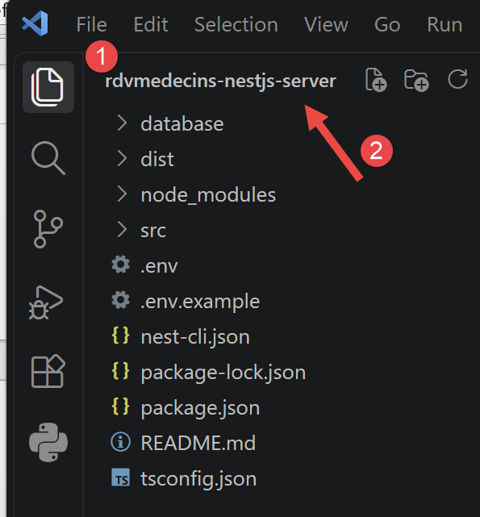
2.2. Créer la base de données
Pour créer la base de données [MySQL] utilisée par le serveur [NestJS], nous allons utiliser l’outil Laragon. En septembre 2026, Laragon est disponible à l’URL [Download Laragon – Fast & Modern Dev Environment ]. Laragon amène avec lui des outils qui permettent d’installer un serveur PHP et le SGBD [MySQL] :
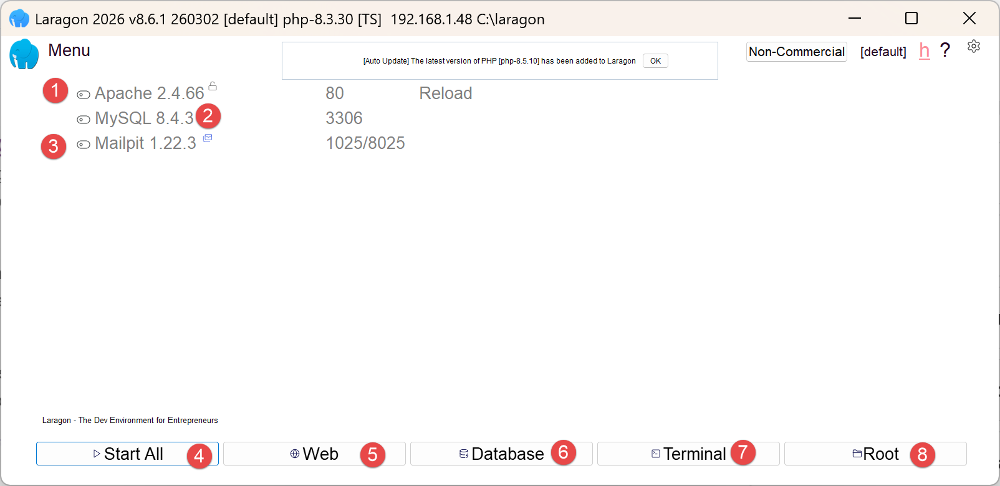
- en [1], un serveur web Apache ;
- en [2], le SGBD [MySQL] ;
- en [3], un outil de messagerie que nous n’utiliserons pas ;
- en [4], lance tous les services (Apache, [MySQL], MailPit) ;
- en [5], affiche la page web d’URL [http://localhost]. Par défaut, cette URL désigne le dossier <laragon-install>\www où <laragon-install> est le dossier d’installation de Laragon ;
- en [6], lance l’Outil HeidiSQL qui permet de gérer des bases de données MySQL. C’est avec cet outil que nous créerons la base de données utilisée par le serveur de calcul de l’impôt ;
- en [7], ouvre un terminal dans lequel tous les binaires utiles à Laragon sont dans le PATH ;
- en [8], ouvre un explorateur windows dans le dossier associé à l’URL [http://localhost] ;
Le dossier d’installation de Laragon comporte les éléments suivants :
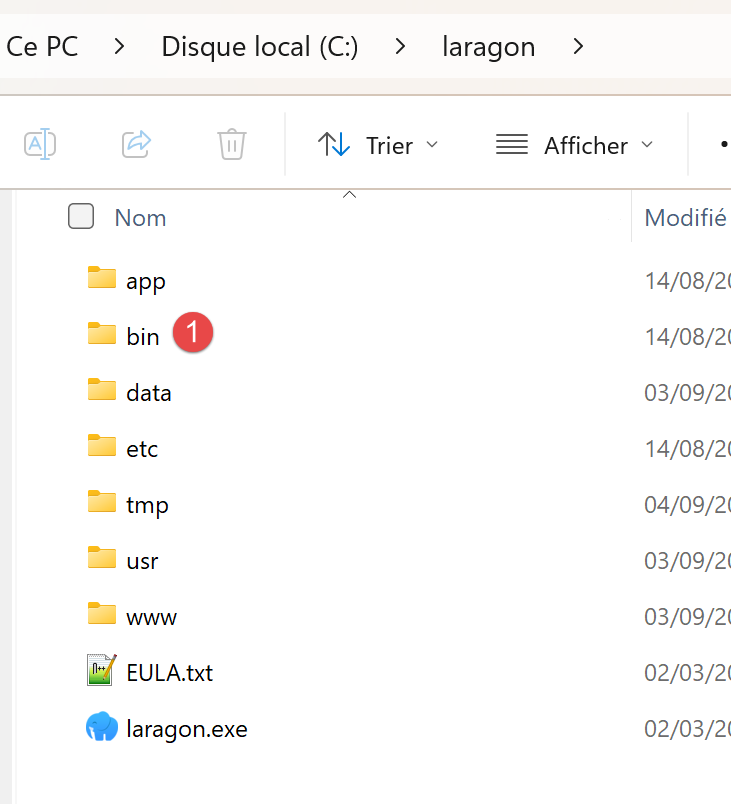 |
- En [1], le dossier [bin] contient de nombreuses applications :
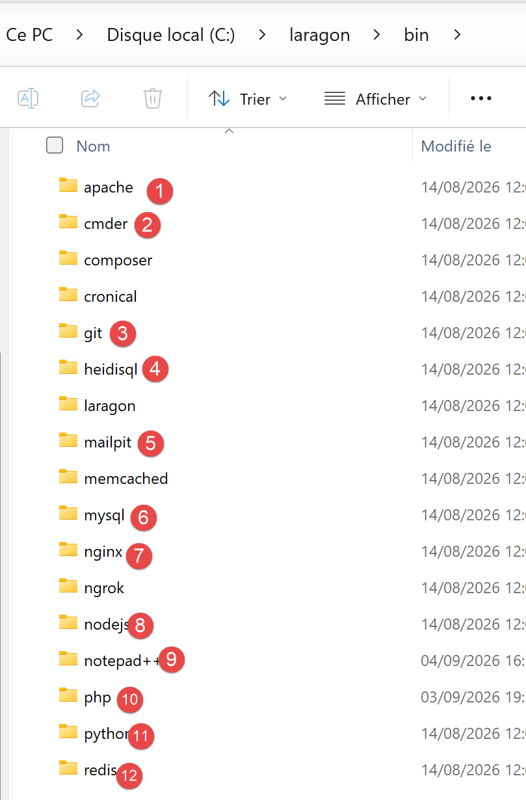 |
- En [1], le serveur web Apache ;
- en [2], un terminal de commandes ;
- en [3], un client [git] permettant de versionner les différentes versions d’un projet ;
- en [4], un gestionnaire de bases de données ;
- en [5], un gestionnaire courrier ;
- en [6], le SGBD [MySQL] ;
- en [7], un autre serveur web ;
- en [8], [node.js] pour exécuter des scripts Javascript ;
- en [9], un éditeur de texte ;
- en [10], l’interpréteur PHP ;
- en [11], l’interpréteur [Python] ;
- en [12], un serveur de cache ;
Laragon ramène avec lui un environnement de développement conséquent. Dans ce cours, nous n’utiliserons que le SGBD [MySQL] [6] et [heidisql] pour le gérer graphiquement ;
Pour créer la base de données [MySQL] nécessaire au serveur [NestJS], nous procédons de la façon suivante :
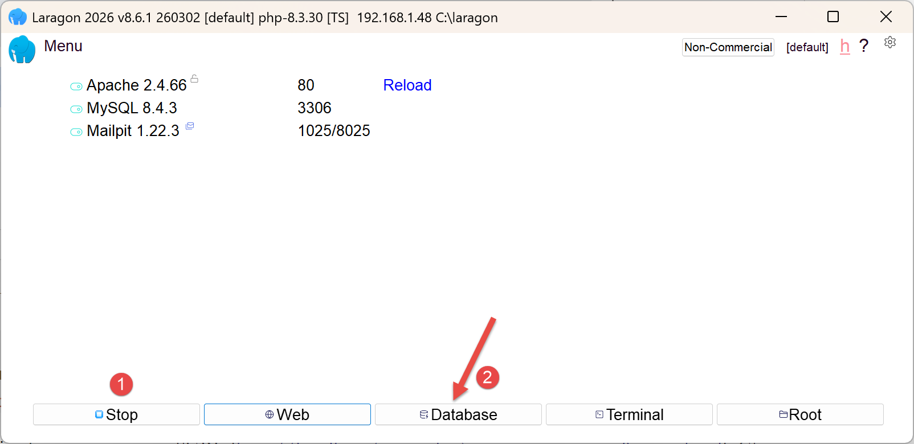 |
- En [1], tous les services doivent être lancés ;
- en [2], l’option [Database] vous permet de gérer la base de données ;
L’option [Database] lance un utilitaire appelé HeidiSQL :
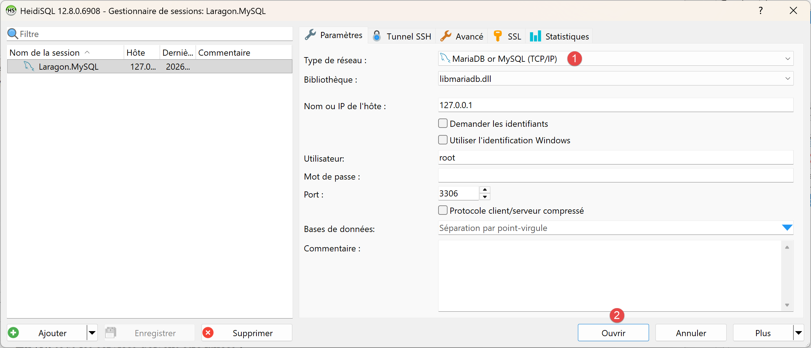 |
- En [1], vous pouvez sélectionner divers SGBD. La valeur par défaut proposée est le SGBD MySQL. Cela convient ;
- en [2], vous ouvrez une session de HeidiSQL ;
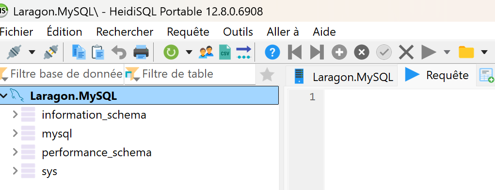 | 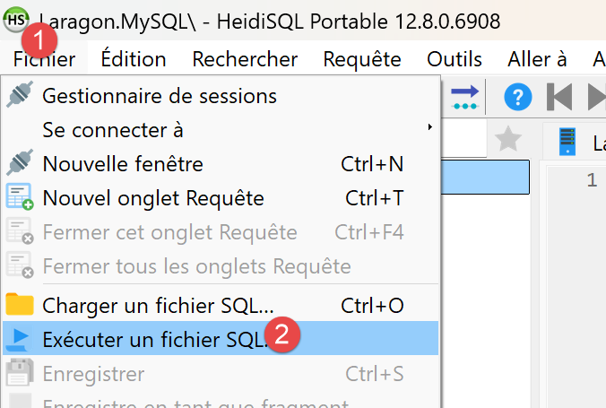 |
- En [1-2], exécutez un fichier SQL puis choisissez le fichier [dbrdvmedecins.sql] que vous trouverez dans le dossier [nestjs-etude-de-cas] :

L’exécution du fichier [3] va créer la base [dbrdvmedecins] utilisée par le serveur [NestJS]. Pour le voir, faites F5 dans HeidiSQL pour rafraîchir l’affichage :

La base de données [dbrdvmedecins] a été créée. On peut en voir le contenu :
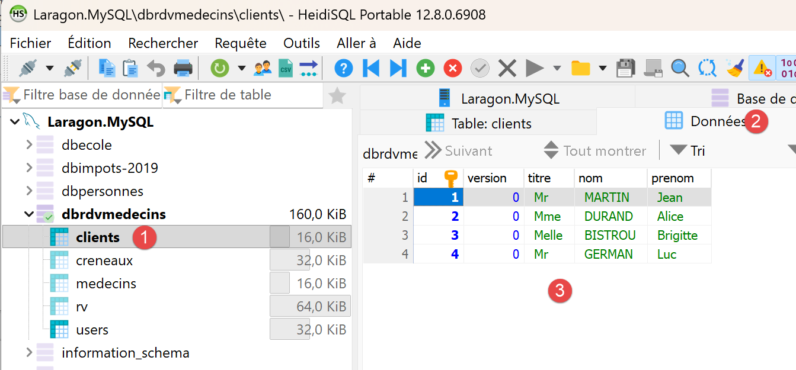
- en [1-3], la table [clients] ;
- [id] est la clé primaire de la table ;
- [version] est le numéro de version de la ligne. Ce numéro augmente à chaque modification de la ligne ;
- [titre, nom, prenom] identifient la personne ;
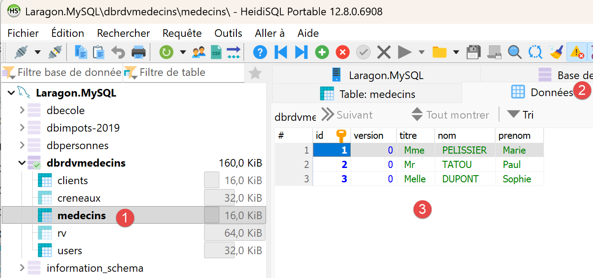
- en [1-3], la table [medecins] ;
- [id] est la clé primaire de la table ;
- [version] est le numéro de version de la ligne ;
- [titre, nom, prenom] identifient la personne ;

- en [1-3], la table des créneaux horaires de consultation des médecins :
- [id] : clé primaire ;
- [version] : numéro de version de la ligne ;
- [id-medecin] : clé étrangère ciblée sur la clé primaire du médecin ;
- [hdebut, mdebut] : heure et minutes de début de la consultation. Ainsi [8,20] signifie 8h20.
- [hfin, mfin] : heure et minutes de fin de la consultation.
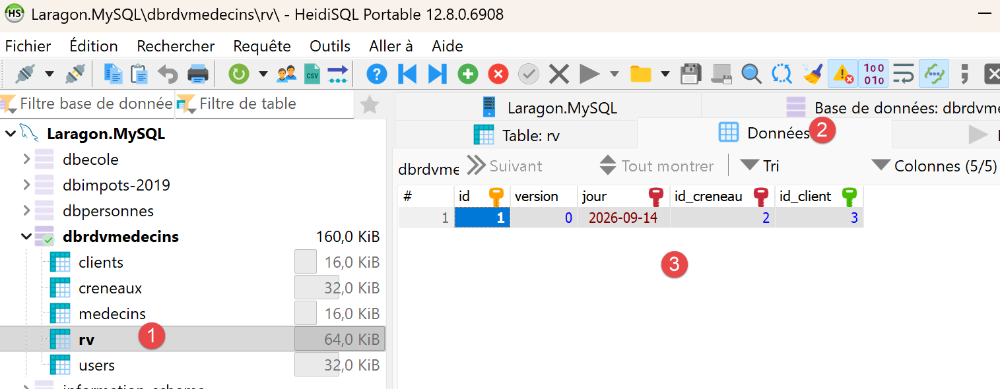
- En [1-3], la table [rv] des rendez-vous pris ;
- [id] : clé primaire ;
- [version] : numéro de version ;
- [jour] : jour du rendez-vous ;
- [id_creneau] : clé étrangère vers la clé primaire du créneau horaire du rendez-vous. Comme un créneau horaire est lié à un médecin, on sait quel médecin assure ce rendez-vous ;
- [id_client] : clé étrangère vers le numéro (clé primaire) du client qui consulte ;

- en [1-3], la table [users] qui liste les utilisateurs autorisés à utiliser l’application [NestJS] ;
- [id, version] : clé primaire, numéro de version ;
- [login, password] : identifiants de l’utilisateur ;
- [nom] : nom donné à l’utilisateur ;
- [role] : son rôle. [ADMIN] a tous les droits. [USER] n’a que des droits de lecture. Il pourra consulter l’agenda d’un médecin mais pas prendre / annuler un rendez-vous ;
2.3. Lancer le serveur [NestJS] pour la première fois
Dans le dossier [rdvmedecins-nestjs-server], tapez les commandes suivantes dans un terminal :
Le fichier [.env] fixe des variables d’environnement :
Adapter le fichier .env fraîchement créé à votre installation [MySQL] (utilisateur, mot de passe, port). Ce fichier contient aussi, depuis l’ajout de l’authentification (cf. chapitre 3), une clé JWT_SECRET : la valeur d’exemple convient pour suivre ce document, mais devra impérativement être remplacée par une chaîne aléatoire propre à vous avant tout usage réel.
Démarrer ensuite le serveur :
La console affiche, dans l’ordre : le démarrage du module [NestJS], la liste des routes exposées par le contrôleur, puis la confirmation du démarrage :
Ce relevé de console confirme que le serveur écoute bien sur le port 8080 - exactement le même port que le serveur Spring Boot du document original, choisi volontairement pour cette raison.
2.4. Tester le serveur avec un navigateur
Depuis l’ajout de l’authentification (chapitre 3), toutes les routes de RdvMedecinsController exigent un jeton JWT valide : un navigateur, seul, ne permet donc plus de les tester directement. Par exemple :
renvoie désormais, sans jeton, une erreur 401 Unauthorized :
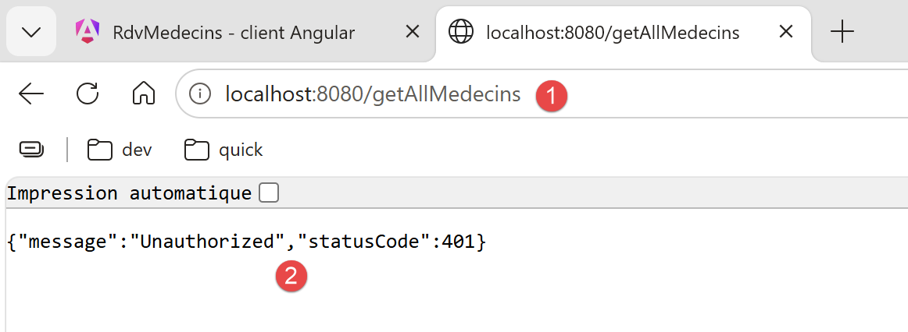
C’est le comportement attendu : cette réponse confirme que le serveur protège bien ses routes. Postman (section suivante) est nécessaire pour obtenir un jeton, puis pour l’utiliser.
2.5. Tester le serveur [NestJS] avec Postman
L’outil Postman est disponible à l’URL [https://www.postman.com/downloads/]. Vous aurez peut-être à créer un compte.
Lancez tous les services de Laragon, puis ouvrez l’application de bureau Postman :
 |  |
- En [1-2], créez une requête HTTP pour interroger le serveur de gestion des rendez-vous des médecins ;
2.5.1. Se connecter et obtenir un jeton
- créer une nouvelle requête Postman, méthode POST, URL http://localhost:8080/login ;
- dans l’onglet [Body], choisir raw puis le format JSON, et saisir : {"login": "admin", "password": "admin"} (ou user/user pour tester le rôle USER) ;
- envoyer la requête.
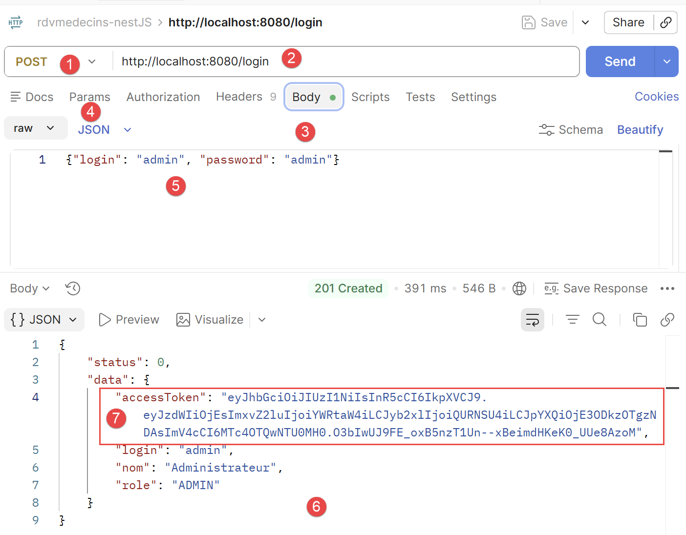
- en [1-2], la requête POST au serveur [NestJS] qui oeuvre sur le port 8080 ;
- en [3-5], le corps de la requête. Celle-ci transmet au serveur la chaîne JSON des identifiants de l’utilisateur qui veut se connecter, ici admin/admin ;
- en [6], la réponse du serveur ;
- en [7], le jeton d’authentification que les requêtes ultérieures doivent envoyer au serveur pour dire “je me suis déjà authentifié” ;
Copiez la valeur de accessToken : c’est ce jeton qu’il faut désormais présenter à chaque requête suivante. Ci-dessus le jeton à copier est “eyJ...zoM” (sans les “).
2.5.2. Appeler une route protégée avec le jeton
Pour GET /getAllMedecins (ou toute autre route de RdvMedecinsController), ajouter dans Postman, onglet Authorization, le type Bearer Token, et coller le jeton copié ci-dessus (Postman ajoute alors lui-même l’entête Authorization: Bearer <jeton>).

- en [1-2], la requête envoyée au serveur. Elle demande la liste des médecins en base de données ;
- en [3-5], la requête doit envoyer le jeton d’authentification. En [4], choisissez [Bearer Token] et en [5] collez le jeton d’authentification que vous avez copié précédemment ;
- en [7], la réponse du serveur ;
2.5.3. Tester les routes POST (/ajouterRv, /supprimerRv)
Même démarche que ci-dessus (méthode POST, corps JSON, jeton en Bearer Token), exactement comme le document original utilisait le complément Chrome « Advanced Rest [Client] » pour les mêmes routes.
Note : vous pouvez retrouver les requêtes Postman qui suivent dans la collection [rdvmedecins-nestJS.postman_collection.json] :

Dans Postman, faire Ctrl-0 pour charger la collection :

- cliquez sur [1] pour charger la collection et sélectionnez le fichier de la collection. Une fois chargée la collection, celle-ci expose ses requêtes :

Pour tester /ajouterRv avec le jeton d’un compte ADMIN :
- requête Postman, méthode POST, URL http://localhost:8080/ajouterRv ;
- onglet Authorization : Bearer Token, jeton de admin ;
- onglet [Body], raw, JSON : {"jour": "2026-09-13", "idClient": 1, "idCreneau": 5} ;
- envoyer la requête.

Vous pouvez vérifier avec HeidiSQL qu’un rendez-vous a été ajouté en base :
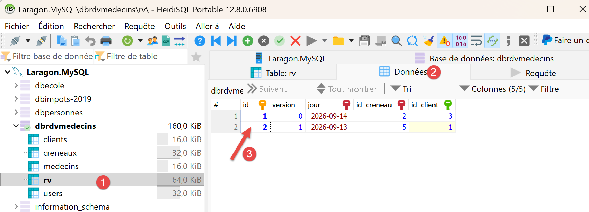
Pour tester /supprimerRv, la même démarche s’applique avec le corps {"idRv": 2} (l’identifiant du rendez-vous à annuler (8) ci-dessus).

- en [4], ci-dessus le numéro du rendez-vous à supprimer ;
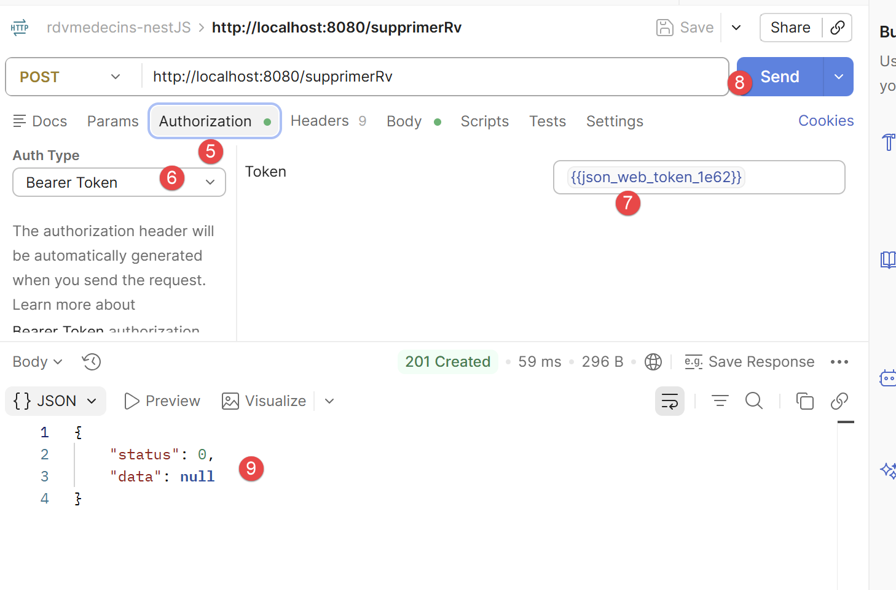
- en [5-7], le jeton d’authentification ;
- en [9], la réponse du serveur. [status=0] signifie que l’opération s’est bien déroulée. Vous pouvez le vérifier avec HeidiSQL :
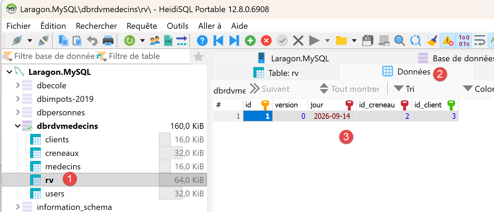
- en [3], le rendez-vous n° 2 n’existe plus ;
À essayer : refaire cette même requête /ajouterRv avec le jeton du compte USER (user/user) plutôt que celui de admin : la réponse devient 403 Forbidden, avec le message le rôle [USER] ne permet pas cette action (rôle requis : ADMIN) - la démonstration concrète du contrôle d’accès par rôle mis en place au chapitre 3.
2.6. Lancer le client [Angular] pour la première fois
Dans le dossier rdvmedecins-angular-client (le serveur [NestJS] devant être démarré au préalable) :
Puis ouvrir http://localhost:4200 dans un navigateur : l’écran de connexion s’affiche en premier (cf. Chapitre 5).

- en [1], l’URL du serveur qui délivre l’application [Angular] ;
- en [2], l’URL du serveur [NestJS] qui gère la base [rdvmedecins] ;
Il est important de comprendre qu’il y a ici deux serveurs web, l’un d’eux étant client de l’autre.
Deux boutons « FR »/« EN », en haut à droite, permettent de basculer l’interface en anglais, y compris avant toute connexion. Se connecter avec l’un des deux comptes de démonstration (admin/admin, accès complet, ou user/user, lecture seule) pour accéder au reste de l’application. Le chapitre 5 détaille l’utilisation complète de ce client, avec les captures d’écran de chaque étape.